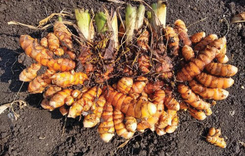
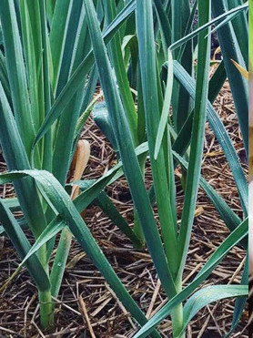
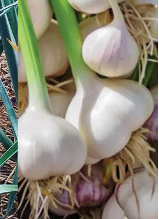
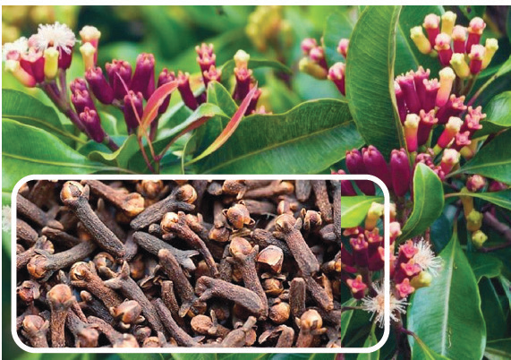
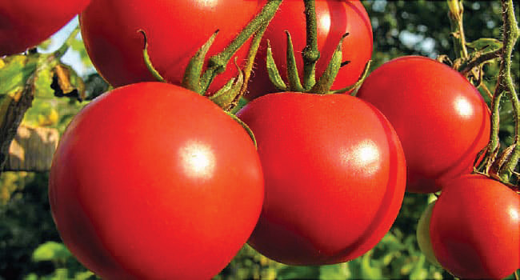

Activity 3.2
Examine about two fruit crops that are common in your area.
Compare these fruit crops to the same fruit crops grown in other parts of Tanzania.
Think about what these fruit crops are used for.
Record your responses in your portfolio.
Consider the fruit crops you have learnt about and think about what businesses you could start using these fruit crops to earn money.
Record your responses in your portfolio.
Also, look for information about other common fruits in your area.
Outline the lessons learnt from this activity and record them in your portfolio.
Spice crops
These are crops in which parts or substances extracted from their parts are used to give a special flavour to foods or drinks.
Some spice crops are shown in Figures 3.48 to 3.65.




